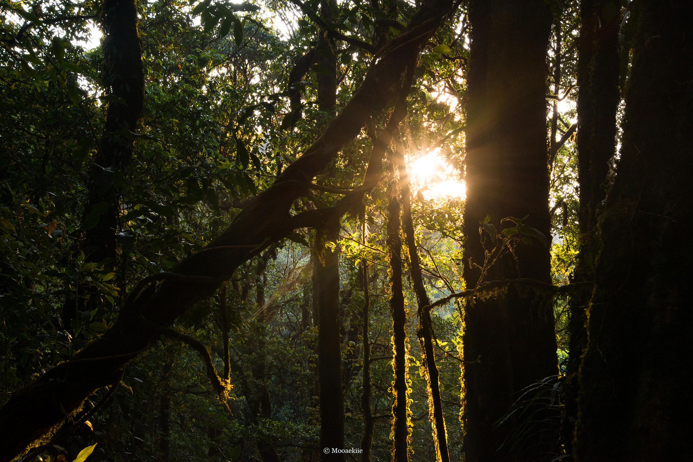
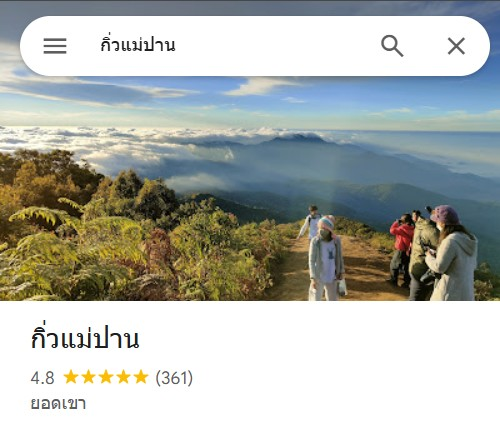

กิ่วแม่ปาน
เส้นทางเดินศึกษาธรรมชาติ ชมทะเลหมอกและวิวสันเขา หนึ่งในเส้นทางเดินป่าที่สวยที่สุดของไทย


หากคุณกำลังหาที่ท่องเที่ยวสุดเขียวขจีในเชียงใหม่พวกเราชาว UNSEEN ขอแนะนำ “กิ่วแม่ปาน” เหมาะสำหรับสายเดินป่าเดินเขา ให้คุณได้เพลิดเพลินไปกับธรรมชาติ
.. อย่าลืมมารีวิวให้ชาว UNSEEN ฟังด้วยนะ ..
แตงกวา | ★★★★☆ (2 วันที่ผ่านมา)
รีวิว : สวยมากเลยค่ะ บรรยากาศดีมาก ...
สาลี่ | ★★★★☆ (2 วันที่ผ่านมา)
รีวิว : เดินเหนื่อยค่ะ 555 แต่ไหว ...
น้ำผึ้ง | ★★★★★ (7 วันที่ผ่านมา)
รีวิว : วิวสวยมาก คุ้มค่ากับการเดินค่ะ...
ส้มจี๊ด | ★★★★★ (14 วันที่ผ่านมา)
รีวิว : วิวตอนพระอาทิตย์ขึ้นสวยสุดๆ

ดูเส้นทาง